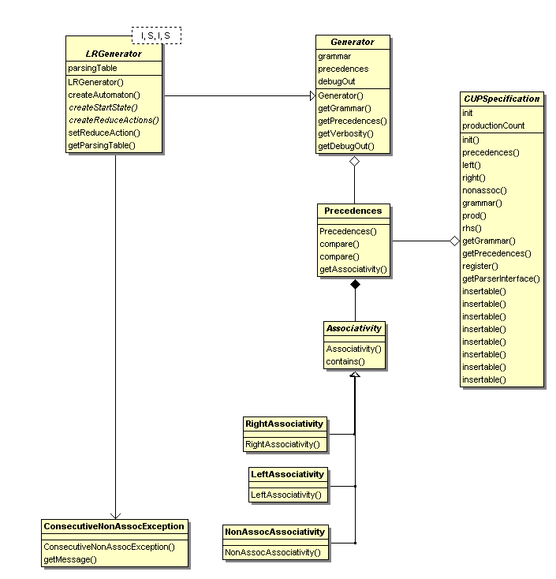
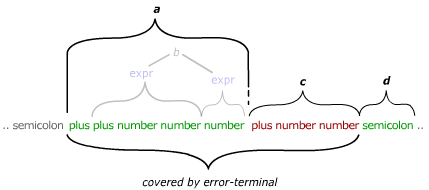
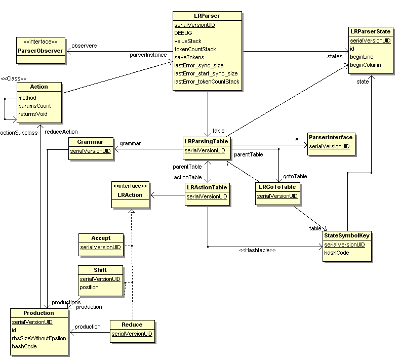
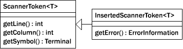
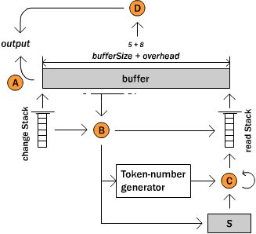
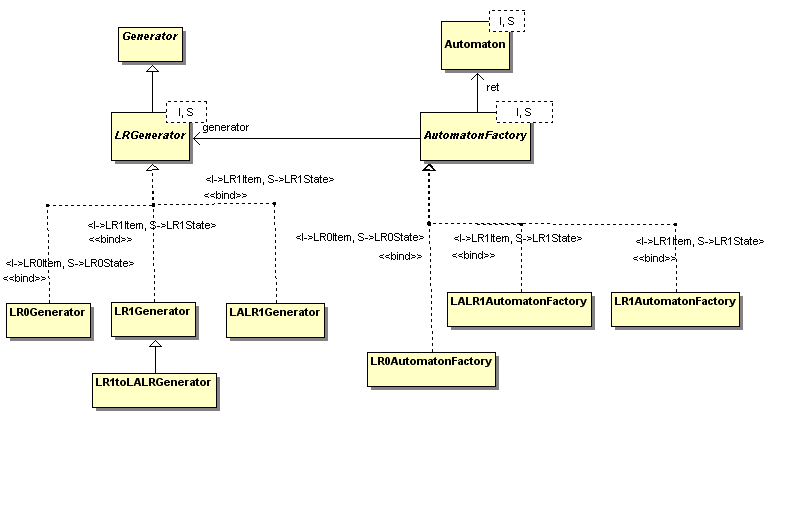

Repairing a file written in MiniJava: The original input is shown in black, orange tokens have been inserted, underlined text is covered by error productions.
This manual describes the basic operations and use of
CUP2.
For any problems or questions about CUP2 please
contact cup2@mailseidl.informatik.tu-muenchen.de.
CUP2 is a system for generating parsers from concise specifications. CUP2 is completely written in Java and combines the algorithmic ideas from its predecessor CUP with the features of modern Java.
While CUP supports LALR(1) only, CUP2 includes LR(0), LR(1) and LALR(1) out of the box and allows easy extensions for other grammar classes.
Unlike many other traditional parser generators (also including CUP) CUP2 does not create parser source code based on a separate grammar definition language, but uses Java API calls combined with data structures to represent grammar-related information. This means, there is no special language to define grammars and semantic actions, but everything is done in pure Java. Even more, CUP2 disclaims of generating a parser as a source code file, but rather produces a stream of serialised Java code, which can then be loaded by the CUP2 runtime classes.
Note: To understand the following short guide, you should have a basic understanding of context-free grammars and what a parser generator is used for. If not, please consider reading introductory texts like Aho, Sethi and Ullmann's "Compilers: principles, techniques, and tools", Andrew W. Appel's "Modern compiler implementation in Java" or the Wikipedia articles about context-free grammars and compiler-compilers before.
This short guide presents how to use CUP2 to create a parser for your language by means of a simple example. In this example we implement a grammar for arithmetic expressions by first setting up the CUP2 environment, and then specifying a CUP2 grammar based on a grammar for arithmetic expressions. Finally, we define the semantic actions of the parser, producing a syntax tree representation of expressions. Finally the parser is created and deployed. You can download the complete example from (TODO).
Prerequisites: The only thing you need to download is the recent CUP2 release. It works on any Java 1.5 compatible development kit. For this introductory example, it is sufficient to download the plain cup2gen.jar file containing the pre-built binaries. Then, you only have to include the cup2gen.jar file into your classpath.
CUP2 uses Java data structures for defining a grammar
specification. In CUP2, a specification class must be created,
extending the edu.tum.cup2.spec.CUPSpecification
class.
The classical grammar for simple arithmetic expressions over integers in BNF, obeying the operator precedence rules, might look like:
e → e + t | t t → t * f | f f → ( e ) | NUMBER
To specify a parser based on this grammar, our
first step is to declare the symbols of the
alphabet for our grammar in CUP2. For
defining terminal and non-terminal symbols, we have to
declare two enums within our class which must be
called Terminals and NonTerminals,
implementing the Terminal
and NonTerminal interface from
the edu.tum.cup2.grammar package.
In general a grammar consists of a list of
productions. Such productions are created by calls to
the prod method, which is provided by
CUP2.
The prod method expects a non-terminal
(the left-hand side) and for each alternative
right-hand side a list of symbols, grouped via
the rhs method.
Finally the productions, created in this way, are declared as
grammar by passing them as parameters to a call of the
grammar method from the constructor of our parser
class:
So far, our parser generated for the specification
above only indicates success or failure of a parse,
i.e. it accepts those words which can be
created by this grammar and throws an exception if the word cannot be
generated by this grammar. The next step consists in telling the
parser, how to build a syntax tree from these productions. To
achieve this, each production can be extended by semantic
actions. These actions are called whenever the
corresponding production is reduced. The return value of such an action is
then associated with the production's left-hand side.
For example, let the parser run on a
sequence of symbols like e + t. We then want to
obtain an instance like new
BinaryExpression(e,Operators.PLUS,t). As there may exist
different variants for a production's right hand sides, there
may be different actions, providing different return values
for a non-terminal. The type of a symbol thus needs to
be general enough, to permit all possible variants. We need to
specify this type for each symbol (with a value) in the body of our parser class:
For each symbol with a value, create an instance of
the edu.tum.cup2.semantics.SymbolValue class,
parametrised with the appropriate value class. The name of this
instance must be exactly the same as the symbol
(case-sensitive). In our example, neither the terminals PLUS,
TIMES nor the parentheses
(LPAREN,RPAREN) carry any
values, so they are omitted in the type declaration.
We declare that NUMBER carries
integer values (as line 32 illustrates).
All our non-terminals and consequently our productions
are based on a common
class Expression (cf. lines 33-35).
. For this
consider the following listing:
Let us look at lines 42 to 44 in more detail. We
extend the parameters of the production method by instances
of the edu.tum.cup2.semantics.Action class. This
class allows to specify a method a,
which provides the semantic action code, which is executed, when the
previously specified rhs block is reduced.
For each non-terminal of the corresponding rhs
which has been assigned a type via the SymbolValue
class, there must be a corresponding formal parameter
of a. In our case, we have e.g. the non-terminals
e and t, which lead to parameters of
the same name and are of type Integer since they are
specified as SymbolValue<Integer>. The
PLUS terminal was not declared to carry
a value and thus it is omitted in the parameter list of a.
CUP2 is not really a "parser generator", since it does not generate parser source code. Instead, it generates a parsing table which is then processed by a parsing table interpreter, acting as a general parser-driver.
Thus, first we have to create the parsing table and then we are able to initialise the parser with it. This is shown in the following listing. Since we do not want to re-compute the parsing table each time before we initialise the parser, the parsing table can be serialised to a file, as shown in section .
Now, we can feed the parser with input data. In most cases, we will link a lexer generated by a scanner generator to the parser, like in the following listing (see section for more information how to connect a scanner like JFlex to CUP2).
Next we present a complete
description of all parts of a CUP2 parser specification. A
complete parser specification is a subclass
of CUP2Specification which consists of
Installation: To use all features of CUP2 within
your Java application, you only have to include
the cup2gen.jar file into your classpath.
First, you have to define the terminal and non-terminal symbols
occurring in the productions of your grammar. Terminal
symbols are those tokens, from which the input of the parser is
composed of and they are in generally produced by a lexical
analyser. The non-terminal symbols are the inner nodes of the
parse tree. As each subtree of depth 1 of the parse tree
corresponds to a production of the grammar, we have to use a
non-terminal symbol as a left-hand side symbol for each
production. Before usage, each of these symbols has to be
declared in Java. This is achieved by creating a new enum
called Terminals (implementing
the Terminal interface) and another
enum called NonTerminals (implementing
the NonTerminal interface) within Your CUP2
specification class, each of them containing the particular
symbol names. It doesn't matter whether the symbols consist of
uppercase or lowercase letters. Here is an example of such two
enums:
Technical remark: It is mandatory to name the two
enums precisely Terminals and NonTerminals.
CUP2 uses reflections to search for enums of these names to
learn about the symbol names of the grammar.
The specification of the symbols above provides names
for symbols, which can be used within productions.
Note that with CUP2 it is possible to
associate a class type with each symbol. Terminal
symbols (created by a scanner) can carry a
value, while non-terminal symbols can
be filled with information obtained during the parse run. To
declare a type for a symbol, You have to declare inner
classes within Your CUP2 specification, each of them named
exactly the same as the enums in the symbol specifications
above. Each such class must inherit from
the SymbolValue class which is parametrised with
the actual type of the symbol.
You can see an example of such a type assignment here:
Technical remark: Again, it is mandatory to use
exactly the same names here, as You did when specifying the
symbols within the two enums Terminals
and NonTerminals. CUP2 uses reflection to
recognise the names of the symbols.
A grammar consists of a set of productions. Each production
has a left-hand side non-terminal and a list of right-hand
side symbols. This hierarchy is reflected in the class
hierarchy of the CUP2 library classes. CUP2 provides the
classes and interfaces Grammar, Production,
Symbol (either Terminal or
NonTerminal) to represent grammars. When defining
the grammar, we create productions out of left- and right-hand
sides and add them to the CUP2 grammar specification. You can
instantiate these classes manually, using their constructors,
or more conveniently use the provided builder methods of the
CUP2 specification class, as described in the
following. Next, we want to define the following
grammar for arithmetical expressions in CUP2:
res → expr SEMI expr → NUMBER expr → expr PLUS expr expr → expr TIMES expr expr → LPAREN expr RPAREN
We now use the builder methods grammar,
prod and rhs to first group the
right-hand side symbols of a production and then pass this
production to the grammar. The constructor of the CUP2
specification is as follows:
Apart from this direct transfer from grammar to code, we may also join the productions with the same left-hand side to a single production with multiple variations of right hand sides:
A parser, constructed by the so far introduced productions
is fully functional, i.e. indicates a successful parse run or
a failure. In order to compute any value or to construct any
representation of the parser's input, we need to equip the
parser with semantic actions. Semantic actions in
CUP2 are Java methods that contain code which is executed
every time the parser decides to reduce the so far recognised
symbols according to one of its rules. A semantic action for
CUP2 is specified as an anonymous subclass of
the Action class, providing the
method a.
The parameters of a represent
the right-hand side symbols of a production, while its return
type must match the type associated with the production's
left-hand side. Such semantic actions are declared as
parameter to the prod builder method, directly
following the rhs they belong to. Consider
the following example for a semantic action, which is provided
for the production expr → expr PLUS
expr :
Note that the types of the parameters a and b
must match the types they have been associated with
in the symbol declaration step. Also note that symbols without
an associated type (like PLUS in the upper
example) do not occur in the parameter list of an action.
It is not very common that there exists the need for semantic
actions, before the sequence of symbols of a right-hand side
of a production is recognised completely. In these cases, CUP2
permits the use of so-called inner actions.
In contrast to ordinary actions, inner actions are not
triggered when a production is reduced, and thus it has to be
flagged, at which position within the sequence of right-hand
side symbols this action has to be triggered.
An inner action is marked with the special
terminal $a. The type of this terminal is
determined by the type of the production's left-hand
side. It may be accessed in the action code of later occurring actions
which are part of the production. Therefore consider
the following example:
For more examples have a look at edu.tum.cup2.test.semanticShiftActions.*
Technical remark: The parser generator does not create inner
actions as special cases, but emulates them with ordinary reduce
actions. For every semantic shift action X indicated
by the special terminal $a,
an auxiliary non-terminal HX is created which then replaces $a.
An additional auxiliary production HX → ε is created and
assigned to a semantic reduce action which contains the code of the
semantic shift action X. Note that using inner actions, different variants
of the right-hand side may lead to shift reduce conflicts.
Technical remark: CUP2 tries to verify that actions match the
productions they are associated with. First, CUP2 compares the
number of supplied arguments to the number of symbols which are associated
with types (and thus can hold values). In more detail, CUP2 checks,
whether the action parameters and return types match with the types,
associated with the symbols. However, as the type information is checked at
runtime, CUP2 cannot distinguish between generic types
(i.e. List<String> == List == List<Integer>) in the current version.
Experienced users will have already noted a problem with the
example grammar from section : It is
ambiguous. An ambiguous grammar is a grammar which, given
a certain input, can reduce the parts of the input in two
different ways such as to give two different answers. Take the grammar
from section for example, given the
following input: 3 PLUS 4 TIMES 5. The grammar can either create an
expression tree evaluating to 35 or to 23,
depending on which sub-expression is evaluated first. Such ambiguities
result in so-called shift-reduce or reduce-reduce
conflicts. In our example, creating a parser with the naive grammar will
yield a shift-reduce conflict. This results from: under the
symbol TIMES, the parser is not able to decide,
whether to shift the symbol TIMES onto the stack or
whether to reduce 3 PLUS 4. Thus, when the parsing
table has to be generated, an exception occurs:
a ShiftReduceConflict is thrown.
However, CUP2 offers a construct for a useful parsing with ambiguous grammars,
by specifying precedences and associativities of
particular terminal symbols.
These precedences can be seen as advice, which transition in the automaton
has to be preferred when creating the parsing table. Precedences
resolve shift reduce conflicts.
In our example, specifying TIMES to have a higher precedence
than PLUS would solve these conflicts, as the
multiplication will be performed before the addition.
Consequently, in case of a shift reduce conflict the parser
determines whether the terminal to be shifted has a higher
precedence or if the production to reduce has a higher
precedence. In the first case the terminal is shifted, otherwise a
reduce is performed.
However, there is still a problem if the terminals have equal
precedence.
Let us take the input 3 PLUS 4 PLUS 5 as an example.
We overcome this by specifying the associativity of a
terminal symbol, which are also used to resolve shift reduce
conflicts.
When using left associativity, the leftmost occurrence of the symbol is
reduced first, i.e. 3 PLUS 4 is preferred. When using right
associativity 4 PLUS 5 is the preferred reduction,
i.e. that it is shifted onto the stack, hence, the reductions will
take place from right to left.
nonassoc states that there is no associativity for terminals with
a certain precedence (e.g. for a compare operation like 3 == 4 ==
5) TODO: Does this make sense?
If there are two consecutive occurrences of terminals with equal precedence
and the associativity nonassoc
a ConsecutiveNonAssocException is thrown.
Summarising, we have three different kinds of associativity in CUP2:
In order to specify precedences and associativities in CUP2, the
precedences method in the constructor of the
specification class has to be called.
The precedences methods gets passed (multiple) associativities of symbols.
Their order in the parameter list determines the precedences of the symbols.
Conveniently, associativities of symbols are obtained through return values
of calls to left, right
or nonassoc.
These methods will internally create the appropriate associativity class, e.g. LeftAssociativity.
For an example on how to specify precedences and
associativities, consider the following code:
Technical remark: The following diagram shows the classes used to implement precedences and associativities and their relation.
CUP2 concentrates on syntactical analysis only. Thus, it does not read raw character input from files directly. Instead, CUP2 expects a lexical analyser to split the raw input into tokens (such as keywords, numbers and special symbols), annotated with further information, e.g. the value of an integral constant. This task is in general performed by a scanner. CUP2 offers a concise interface for scanners. This interface can either be implemented by hand or one can take one of the established scanner generators like JFlex. JFlex is a well-known scanner generator written in Java and works with CUP2 smoothly.
Connecting a scanner to CUP2 is simple. The scanner class must
implement the interface edu.tum.cup2.scanner.Scanner, which
consists of the single method:
Each time CUP2 needs to process a new symbol,
the readNextTerminal method of the scanner is called. The scanner has to return
the next terminal in the input stream, possibly annotated with a value. This is
dependent on whether the terminal symbol was declared to carry data or not
within your grammar specification in section . For instance, if You use a
SymbolValue<Integer> for the NUMBER
terminal from the above example, an integer value must be
assigned to each NUMBER terminal which is returned to the parser.
Symbols are instances of
the edu.tum.cup2.scanner.ScannerToken<T> class,
parametrised by the class T of the value associated with the
symbol (or Object for tokens with no value)
GOON: create static factory methods. Consider
the following example, assuming that NUMBER has a value
but PLUS does not:
CUP2 supports to annotate line and column information for each symbol. This allows to generate more verbose and informative error messages for the CUP2 framework when parsing fails:
The easiest way to create a scanner for CUP2 parsers is using the JFlex tool. For a general introduction please refer to the JFlex User's Manual.
Here is a sample JFlex specification for our example:
There are basically three things you should notice when writing a specification for CUP2:
%% you should define your package and
the needed imports. In most cases, these are just the static imports of
your terminals and non-terminals. You can also add your class comment
here.%class and
add the %cup2 option. This automatically adds support for
Unicode, line numbering and column numbering as well as the correct
interface to the CUP2 scanner and some convenience methods which we will
use in the third part.token factory methods to create the
terminal symbols for CUP2. There are two versions of token:
The first version expects a terminal as its single parameter and is used
for terminals with no semantic value. The other version, shown in line 19,
has a second parameter which contains the semantic value of the terminal.Using this specification, you can create your scanner class by simply
calling java -jar JFlex.jar MyScanner.jflex or using the
appropriate ANT task. Finally, add this class to your classpath and you're
done.
After the previous sections, You created a CUP2 specification ready to be transformed into a parser. A CUP2 parser works with a static code part which executes the main parser driver. This parser driver is in practice parametrised with the concrete parsing table of the particular parser and the class files, containing the grammar and action specifications. In order to parse a file with CUP2, You have to
Since generating the parsing table is in general a costly operation, You may want to perform this task only once in advance and just use the generated parsing table. This is possible, if You serialise Your parsing table. Furthermore, You may not want to actively write a Java program just to compile the CUP2 specification into the parse table and save it. In this case, You can resort to the provided ANT task.
CUP2 contains different generator algorithms based on LR-parsing:
edu.tum.cup2.generator.LR1Generatoredu.tum.cup2.generator.LR1toLALRGeneratoredu.tum.cup2.generator.LALR1Generatoredu.tum.cup2.generator.LR0GeneratorLRParsingTable objects which are compatible
with the parser driver edu.tum.cup2.parser.LRParser. This
parser driver, equipped with a parsing table, can then be used to parse
arbitrary inputs. The following example runs a parser based
on your.path.SampleSpec on a token stream, provided
by MyScanner (c.f. section ):
In most applications, You will separate the parsing table generation process from the application of the finished parser. This can be achieved by using serialisation to e.g. dump the parse table into a file and reload it when using the parser. This can be realised by:
You can now reload the parse table from the file and use it to parse arbitrary inputs:
Technical remark: Since the specification is not
compiled any more, the amount of classes delivered in the final
form can be reduced from the whole package cup2gen.jar to
just cup2parser.jar.
CUP2 can be integrated into the build process of a project via its integrated ANT task. This task allows to generate parsing tables from existing CUP2 specifications. At first, You have to register the CUP2 task in Your ANT script, which can be done as follows:
You can integrate the CUP2 task inside an ANT target to produce a parse table, as in the following example:
TODO: This is going to be messy! All this is not implemented correctly
yet!
The absolute minimum of information to be provided is:
A final important aspect of building parsers with CUP2 is support for syntactic error recovery. The parsers we built so far work well until the parser reaches a symbol which it did not expect. In these cases an unprepared parser simply stops with an exception. It would be more useful if the parser tries to continue parsing at a point, where it is sure what is meant or even tries to give hints, how to correct the input.
One approach to recover from an erroneous symbol sequence consists
in error-handling productions. In particular, CUP2 supports a special error
symbol (denoted simply by error). This symbol plays the role
of a special non-terminal which, instead of being defined by productions,
matches an erroneous input sequence.
The error symbol only comes into play, if a syntax error is detected. If a
syntax error is detected, then the parser tries to replace some portion of
the input token stream with error and then continue
parsing. For example, we might have productions like:
s → ε s → expr SEMI s s → error SEMI s expr → expr PLUS expr expr → NUMBER
This indicates that if none of the normal production for s can be
matched by the input, then a syntax error should be declared, and recovery
should be made by skipping erroneous tokens (equivalent with matching and
replacing them with error) up to a point at which parsing
can be continued with a semicolon (and additional context that legally
follows a statement). An error is considered to be recovered from if and
only if a sufficient number of tokens is past the error
symbol can be successfully parsed. (The number of tokens required is
determined by registering a ParserInterface as described in
section ).
From the point of view of a grammar writer, there is even the possibility
to react to the case when a syntax error occurred. Error productions can
be also equipped with an action method, giving the program access to
an edu.tum.cup2.semantics.ErrorInformation object,
which contains information about the erroneous input fragment:
The symbol error is always associated with the class
type edu.tum.cup2.semantics.ErrorInformation. It provides start-
and end-position of the whole erroneous symbol sequence as well as a set of expected symbols.
It distinguishes between correctly read tokens, bad tokens and
the token which is responsible for getting the parser into an erroneous state (crash-token).
The crash-token is the first bad token or alternatively the part of some correct input following the error.
For example the erroneous input NUMBER PLUS NUMBER NUMBER
SEMI (which has no bad tokens) leads to an error covering
the expr as correctly read token and the crash-position at the NUMBER.
Expected tokens: PLUS, SEMI.
As the computation of correctly read tokens requires some memory overhead,
it has to be enabled specifically when parsing by using the saveTokens parameter:
parse( inputScanner, true )
Now, if the parser encounters an error, the only way to recover consists in special error productions (see section ) providing safe continue handles. This feature is called phrase-based error recovery and often widens the error in order to resume parsing because of missing symbols. Instead of giving up parsing, one may try to insert, replace or delete symbols in the input stream.
The current version of CUP2 features an implementation of error recovery
via the insertion of tokens. This approach yields more detailed error
information while reducing the need for phrase-based error recovery.
Since tokens may carry a value, and the parser cannot automatically guess
what value would make sense for each particular token, the CUP2
specification provides a method to specify default values for freshly
inserted tokens via the insert method.
Let us have a look at the parameters of the method insert(terminal[, repeat], proposals[, value]):
terminalrepeatproposalsvalueinsert:
However, the technique of token insertion cannot arbitrarily guess identifiers,
or decide between alternative tokens without knowledge of the
idea behind the program (missing semantics). Thus, token insertion
does not always suffice to recover from an error, conserving the need
for error-productions.
Attention: To use token insertion for error recovery, CUP2
relies on the programmer to insert a further
attribute insert to the terminals in the following way:
Technical remark: The class InsertionScanner is responsible for deciding which tokens to choose.
It uses the original scanner and the parsing table in order to create tokens.
More details on the algorithm and usage of the scanner can be found in chapter .
When parsing repaired input, all observers are notified automatically.
This chapter contains information for developers that want to modify or extend CUP2. If you have any questions or if you think that we should describe a certain topic in more detail, please contact us!
In order to add your own parser generator class to CUP2 you have to insert your
parser generator in the generator class hierarchy. (see section )
This means that your parser class has to be a subtype of the class Generator, either directly or
by being derived from another class that is a Generator subtype.
When creating a generator for an LR parser (or a
parser based on a related algorithm) it is recommended
to subclass the class LRGenerator.
To create such a generator, derive your own generator class from LRGenerator.
The main parts of the LRGenerator class are its constructor and the following template methods that
a custom parser generator class should override. Those methods are used in the constructor of the LRGenerator class
to generate the parsing table for the parser.
public Automaton<I, S> createAutomaton()
protected abstract S createStartState()
creates and returns the start state; This is the item which consists of the start production at position 0.
protected abstract void createReduceActions(LRActionTable actionTable, I item, LRParserState state)
fills the given LRActionTable with reduce actions, using the
given non-shiftable item and its parent parser state;
The constructor of LRGenerator is passed
to the CUP2 specification for which to generate a parser and furthermore the verbosity (how many debug messages are printed)
and a boolean flag that is used to indicate whether
the grammar should be extended have to be
specified. It is recommended to provide a constructor
in your own parser generator class that also gets passed this information
and passes it further to the LRGenerator
constructor. (Additionally it is useful to provide some
kind of convenience constructors which pass default
parameters to the LRGenerator
constructor. Consider e.g. LALR1Generator.java.)
The method createAutomaton returns an automaton for the grammar. For a separation of concerns
in CUP2 there is a separate class hierarchy for Automaton Factories. The root of this hierarchy is the class
AutomatonFactory<I extends Item, S extends State<I>> .
These classes contain code to create the automaton for an LRGenerator. The automaton is similar to a canonical automaton for the grammar.
(The states of such an automaton contains the kernels of the states for the canonical automaton that can be extended with the method closure to
obtain all the states of the canonical automaton.)
In the current version of CUP2 there are three different concrete Automaton Factories (LR0AutomatonFactory, LR1AutomatonFactory, LALR1AutomatonFactory).
Each of them creates a different type of automaton for a certain kind of LR parser.
Any parser must be able to cope with syntactically invalid input. It is normally unsatisfactory
for the parser to just terminate on detecting an error. Errors must be recovered from in some
way, producing an error message, and continuing the process of parsing until the end of input
is reached.
CUP2 supports phrase-based error-recovery with dynamic synchronisation.
It can skip erroneous tokens based on rules given in the grammar in order
to resume safely.
It is able to retrieve all correctly read information, which may be used
to repair the error.
The usage of error-handling productions is explained in chapter .
There may occur two exceptions when parsing erroneous input:
If the specification of the grammar does not provide an appropriate error-recovery for an error X,
the parser throws a MissingErrorRecoveryException if X occurs.
If the end of the input stream is reached too early (while searching for an appropriate token to resume parsing),
an EndOfInputstreamException is thrown.
In order to deal with all problematic situations equally,
a parser observer may be used.
 If the parser encounters an error, this implies that
In order to supply the grammar writer with sufficient tokens (from a and c),
the parser has to temporarily save correctly read tokens, although they might never be used,
and save many tokens in the ErrorInformation object.
Because this feature requires a lot of overhead for complex
grammars with a big input, by default they are turned off.
If this is the case, the error information lacks information about a and c,
but its start-, end- and crash-positions are still available.
This feature can be turned on by starting the parser using the parameter saveTokens - i.e. parse( input, true )
in order to obtain instances of ErrorInformation with complete lists of token.
If a token of set d is found, the parser cannot always take the subsequent input as granted,
because that token might occur randomly (e.g. due to misprint or as part of something else
which can not be read correctly because of the error).
In order to deal with such problems, the parser only continues with normal parsing if at least
three correct tokens follow the error.
This limit is called error-sync-size and it can be
changed dynamically during parsing.
In order to do so, register your own implementation of ParserInterface:
Note that too few error-handling productions are used,
some errors might not be recovered from.
Although if too much or bad error-handling productions are used ,
the parser is not able to easily recover from an error.
Consider the following grammar:
S → EXPR
EXPR → number
EXPR → EXPR plus EXPR
EXPR → if COND EXPR else EXPR
COND → BRACEL EXPR eq EXPR BRACER
COND → BRACEL EXPR le EXPR BRACER
After inserting an error-rule as the following for the condition rules,
error-recovery tries to find a BRACER to continue parsing the condition.
COND → BRACEL error BRACERHowever, what happens if the user forgot the
BRACER?
If the terminal following the error-terminal was one which occurred more often,
the error-recovery would not assume the error to be that big.
Even if the expected token was found, in case of an additional error shortly after it,
the subsequent input is assumed to be part of the error until the
next RBRACER occurs.
If using sync-size correctly, severe expansions of errors may be reduced.
Nevertheless the following rule seems more suitable, because it resumes at the next expression,
although it extends an error inside the braces from BRACEL to BRACER.
COND → error
In order to understand error-recovery in more detail, it is necessary to understand how CUP2 parses. The parser driver maintains a stack to maintain all tokens which do not yet state a full rule as well as values created from other stack-items previously stating a full rule. The parse table contains the possible next action for every pair of stack-item and a terminal which may be read. Every action in the table may push the token onto the stack, reduce the stack-items which state a full rule, or indicate that this token cannot follow the previous input (error).
Error-recovery in CUP2 follows three steps:
X is found which may resume parsing after the error-terminal.
This means, that the action found for terminal X
under state B in the action table is not an error-action.
X is one of the expected terminals.
The manner in which the parser cuts back the stack to the place at which an error-terminal can be shifted, fixes the parser into trying to correct the error for a specific construct, which might not be appropriate. TODO : reference to Bruce Hutton - Computer Language Implementation 2006 Lecture Notes
In order to use serialisation an object of
type LRParserSerialization has to be
created and the file name of the file that is going to be used to store
the parser data has to be passed to the constructor.
When creating an LRParserSerialization the method saveParser can be used to save
a certain parser state to the file.
This is shown in the following figure.
To restore a parser use the method LRParserSerialization.loadParser.
The serialisation mechanism in CUP2 is based on the Java serialisation mechanism.
When serialising a parser the parser state (especially the LRParsingTable
object) is saved to a file in order to be able to use the generated parser without having to generate the parser again later on.
In the following class diagram all the classes that get serialised are shown.
Semantic actions are treated in a special way when serialising the parser.
As we want to keep the specification as simple as possible, the user should not have to care
about serialisation when writing the CUP2 specification for a grammar. Therefore the Production class takes care of
serialising the semantic actions.
When an action is serialised the Production class saves a class object of
the anonymous subclass to the
file. When deserialising the parser,
the Action gets instantiated via
reflections.
To provide good compatibility with different JVM versions, we explicitly configure the Java serialisation to use protocol version 1 of the Java serialisation.
This chapter goes more into detail on how to use CUP2 token insertion. It is recommended to read chapters and to understand the basics.

The class InsertionScanner is responsible for deciding which tokens to choose.
It uses the original scanner and the parse table in order to create tokens of type InsertedScannerToken,
which contain detailed error-information.
A TokenInsertionScanner may be used e.g. in a GUI to propose solutions to the user
or to repair erroneous input and parse it.
A call to scan4allInsertions() retrieves all inserted tokens.
The algorithm works on a buffer of bufSize tokens (default: 8)
which may contain maxOversize additional tokens following the last error in the buffer (default: 8).
During token insertion from left to right (into the buffer),
the scanner identifies how much other possibilities could have been chosen in the past
and when this number rises to maxPossibilities (default:10), another solution is chosen.
This way, solutions with many insertions are refused if a shorter one exists.

In order to find solutions for the parser whilst the buffer may change, two stacks are maintained:
Operations for read (and inserted) tokens are performed on
the readStack. The changeStack
represents the contents of readStack at the time
the tokens in the buffer have not been read yet.
The algorithm works as follows:
S if available until the buffer is full.
The input is parsed according to the table on the readStack
(step C).
readStack is returned to changeStack
and the contents of the buffer are cleared after pushing them back into S (step B).S and inserted according to
the chosen solution until at least an amount of error-sync-size tokens could be
parsed successfully after the error (step C).
maxOversize or maxPossibilities fail,
the TokenNumberGenerator chooses another solution.
The contents of the buffer are cleared and the stacks returned once more
before the algorithm continues at step 3.1.
S are returned whilst the
erroneous readStack is restored using a simple phrase-based recovery (step D).
The changeStack has now of course again to be in the same state as the readStack.
First of all note that CUP2 is not an updated version of CUP, but a complete re-implementation with different design aspects in mind (v. section ). It may be hard to transform your working CUP specification to a working CUP2 specification in no time, but we hope that the advantages of CUP2 will be worth the effort. Furthermore, we are working on a tool (see section ) that helps you transform your CUP files into CUP2 classes.
As described in more detail in chapter , CUP2 does not use plain text specification files, but works with pure Java data structures. This means that the grammar, precedences and semantic actions all have to be defined in Java.
Consequently, the old JFlex specifications cannot be re-used in CUP2. But the required changes are minimal, and altogether less lines of code are needed. Refer to section for more information.
CUP2 does not generate parser source code. Instead, a parsing table (consisting of Java objects only) is generated, which is needed to initialise a predefined universal parser driver, as shown in section . This parsing table can be serialised to a file, and later quickly deserialized back to a Java object, as shown in section .
The error recovery mechanism of CUP2 behaves quite similar to the one in CUP.
The error symbol is now given by the terminal Error which is a special terminal and thus should be imported:
import static edu.tum.cup2.grammar.SpecialTerminals.Error;The method
error_sync_size() can be
implemented. This method is used for parsing a sufficient number of tokens past the error symbol,
by creating your own parser interfaces:
In fact, there is a change in the way an error will be reported.
CUP2 gathers detailed information inside an ErrorInformation object
and hands it over to the corresponding semantic action:
The object of type ErrorInformation provides start- and end-position of the whole error as well as a set of expected tokens.
It distinguishes between correctly read tokens, bad tokens and
the token which is responsible for getting the parser into an erroneous state (crash-token).
In addition, it contains the results of calculations already performed.
The flag recovered indicates that the error has been caught by an error-handling production.
The crash-token is the first bad token or alternatively the part of some correct input following the error.
As the calculation of correct tokens requires some memory overhead, it has to be enabled specifically
when parsing by using the saveTokens parameter:
parse( inputScanner, true )
CUP provides a series of methods that can be used to customise the generated parser. Instead of supplying copying the given code and overwriting of parser methods, CUP2 uses interfaces and observers to communicate. The following methods for customisation can be implemented in CUP2:
user_init(), int error_sync_size()by implementing the parser interface;
report_error(String message, Object info), report_fatal_error(String message, Object info),
public void syntax_error(Symbol cur_token), public void unrecovered_syntax_error(Symbol cur_token)
by implementing and registering an error-observer and/or by catching exceptions;
Symbol scan(), Scanner getScanner(), setScanner(java_cup.runtime.Scanner s)by using the scanner-interface of CUP2;
Examples for a simple parser interface and an error-observer are
given here:
For this section an understanding of the syntax and semantics of the old CUP specification files and the new CUP2 specification files (Java classes) is required.
The CUPtoCUP2 tool translates old CUP grammars to new CUP2 grammars - with restrictions. First of all: The old CUP specification files generate classes that are derived from a certain super class and are able to make use of objects and classes which are visible there or somewhere in the old package. Especially the first aspect is responsible that it is not trivial to guarantee that all the Java code written in an old CUP specification will compile - or even run - when it is just transferred to a new environment. Except doing vast modifications to the code is an option.
However some of the semantic actions might run in the new environment with very few modifications. For example it is possible that semantic actions in the old CUP specification are just used to build up the parse tree and make no or little use of local or inherited methods.
There is particularly one trap to be aware of: The new CUP2 specification
syntax does not have the %prec feature. So if your old
specification file contains such syntax, you will have to find a work-around for
yourself. It is considered to implement this feature in future releases of
CUP2.
To illustrate the use of the CUPtoCUP2 tool, consider the following example, which implements a simple calculator:
In order to call the CUPtoCUP2 tool you have to type the following command in the root directory of the tool:
java -jar ./jar/Compiler.jar <on|off> <cup-file> <classname of the output class>
The classpath should of course include the classes in the directory of the tool.
The first argument tells the compiler to generate code for semantic actions
or to leave out the actions. The second argument tells the compiler which
*.cup file should be translated and the last argument specifies the name of
the class that is generated. The output looks like this:
TODO Way to big example res/MyCalculator.java
The init with or the action code
sections are translated by copy and paste. Comments are generated around
these areas. Using this tool can save a lot of time when big grammars have to be
transformed. As you can see the ordering of the precedences in line 55 is
inverted, and of course shift actions like the one in line 87 work a little
bit different compared to the old CUP specification - cf. line 23 in the old CUP
file.
Most likely you would like to change the specified package in line 3 and
do the corresponding changes in lines 15 and 16. The main method
in line 24 is a little obsolete both in the old file (it is just an
example) and in the new specification format, as the parser is usually called
from a different class. Furthermore the import statement from the old CUP
file was deleted.
Additionally the RESULT in line
91 is initialised to make the compiler work. These changes can be best seen when a diff or
vimdiff is performed. Although a translation of a real CUP grammar is
not that easy, this can be seen as a proof of concept, as the following code
compiles.
TODO Way to big example "res/MyCalculator.java~"
We created a small yet expressive sample project to demonstrate many of the features CUP2 includes. This can be downloaded here.
It is a compiler for the language MiniJava (which is a subset of the Java programming language), which translates MiniJava source code into MiniJVM code (inspired by the JVM, yet much simpler) or a syntax tree. There is also a graphical user interface which looks like a small IDE, where you can see if your source code is correct (if not, the corresponding characters are underlined and also suggestions to fix that error are made).
Let us have a look at the source code of that compiler:
flex/MiniJavaSpec.flex: This is the JFlex specification of the MiniJava language that is used to build a scanner for our compiler. With JFlex, it is converted into the Java class src/compiler/MiniJavaLexer.javasrc/compiler/MiniJavaSpec.java: This is the CUP2 specification of the MiniJava language which contains the grammar, precedences and all the semantic actions that are necessary to create a syntax tree from a MiniJava source.This chapter contains some background information about the design and implementation of CUP2.
Here are the basic ideas why we decided to implement CUP2 from scratch instead of modifying the old CUP release.
While CUP appears to be more or less a port of a C program, CUP2 was designed from scratch with a typical Java style in mind. This includes the usage of all kinds of object-oriented programming techniques and Java's special features like Generics and Reflection.
It is often not clear how algorithms work when reading source code, even if you developed it yourself. Therefore, if they are changed there is a danger of damaging the program, possibly at unexpected locations. When developing CUP2, the following steps were taken to minimise that risk:
One goal of CUP2 was to create a platform for many types of parser generators, even more than just LR(1) and LALR(1), based on a hierarchy of abstract classes for reusing as much code as possible, as shown in figure TODO.
TODO: Somebody created a nice UML diagram showing the current state of the CUP2 generator classes, can you insert it here? Thanks, Andi
At the moment, LR(0), LR(1), LALR(1) and LR(1)-to-LALR (that means generating a parsing table with LR(1) first and then merging states according to the LALR principle) are included in CUP2. However, the object-oriented structure of the project allows adding any parsing algorithms meeting the following requirements:
This design has at least four advantages:
A specification contains a list of all symbols, the grammar including its productions and precedence directives and semantic actions. From a plain text specification, all these objects have to be converted into Java-compatible structures when parsing the grammar. This leads to the idea of defining the specification using the Java grammar directly. The advantages of doing this are as follows:
There are also some disadvantages of course. Mainly the definition in Java code is usually more verbose, since it has to conform to the Java grammar, which makes for example the definition of symbols with values more complicated. Another drawback is the definition of semantic actions. For each action, an anonymous subclass
of Action has to be created, instead of just writing the method body like in CUP.
Below you can see the hierarchy of the generator classes and how generators for different parsers are located in this hierarchy. Besides the actual generator classes there are also classes that generate an automaton for a certain parsing algorithm.
